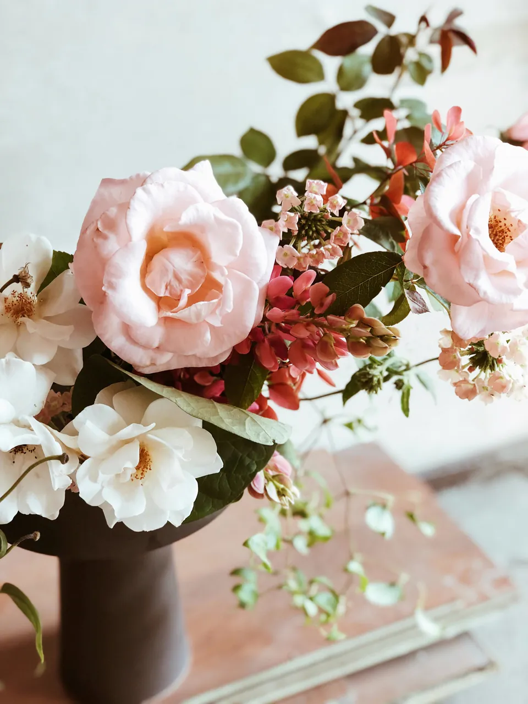

A little more to grow
Every bouquet includes a complimentary seed packet. Plant it, tend it, and enjoy a little more time with nature. Follow the packet’s planting guidance for your space and season.
OUR STORY
Some days call for a grand gesture. Others, a little something on the kitchen table. We think both deserve beautiful flowers.
Aspect is a Dubai floral studio with a simple idea: make giving feel personal. From the first stem to the final ribbon, our arrangements are made to feel considered, full of character, and a little unexpected.
We take our cues from the garden: loose shapes, lovely textures, and colours that belong together. The result is flowers that feel like you.
Find your flowers
A little wild. Always thoughtful.
IT’S IN THE LITTLE THINGS
Every bouquet includes a complimentary seed packet. Plant it, tend it, and enjoy a little more time with nature. Follow the packet’s planting guidance for your space and season.
We let the flowers lead. Seasonal stems may vary, but the palette, shape, and feeling of each arrangement stay true to the design you choose.
Our Dubai collection offers same-day delivery for orders placed before 2pm, with a personal gift message and complimentary delivery from AED 350.
LET’S TALK FLOWERS
A birthday, a thank-you, or a room that needs a little life. There’s always a reason for flowers.
Aspect is a website showcase. The contact details below are fictional demo details.
All times are Gulf Standard Time (Dubai). Same-day delivery cutoff: 2pm.